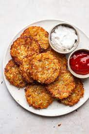

Hash Browns

Description
These classic diner-style hash browns are crispy
on the outside and fluffy on the inside.
Ingredients
- 2 peeled russet potatoes
- 3 tabelspoons of clarified butter
- Salt to taste
- Ground pepper to taste
- Pinch of paprika
- Pinch of cayenne pepper
Steps
- Shred potatoes into a large bowl filled with cold
water. Stir until water is cloudy, drain, and cover
potatoes again with fresh cold water. Stir again to
dissolve excess starch. Drain potatoes well, pat dry
with paper towels, and squeeze out any excess moisture.
- Heat clarified butter in a large non-stick pan
over medium heat. Sprinkle shredded potatoes into the
hot butter and season with salt, black pepper, cayenne
pepper, and paprika.
- Cook potatoes until a brown crust forms on the bottom,
about 5 minutes. Continue to cook and stir until potatoes
are browned all over, about 5 more minutes.